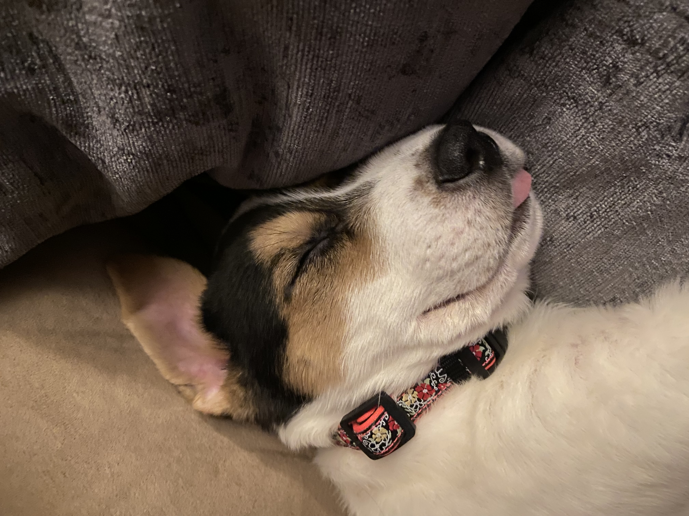
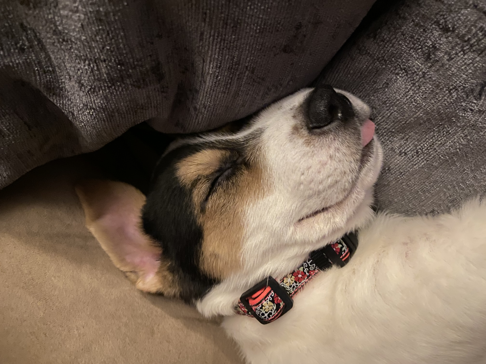
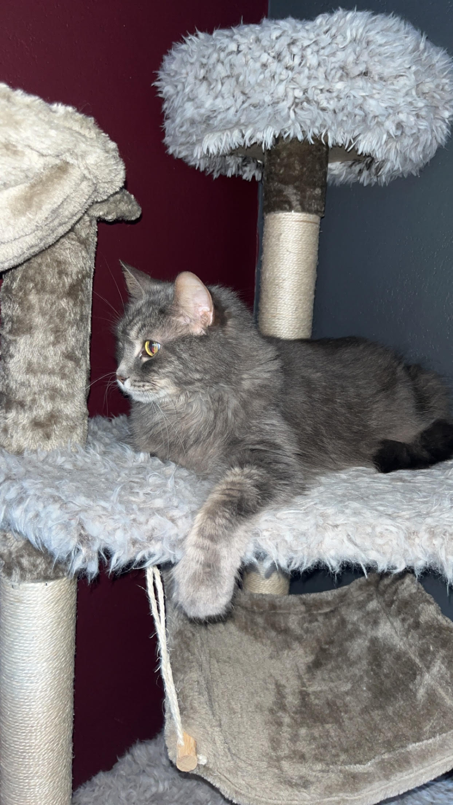
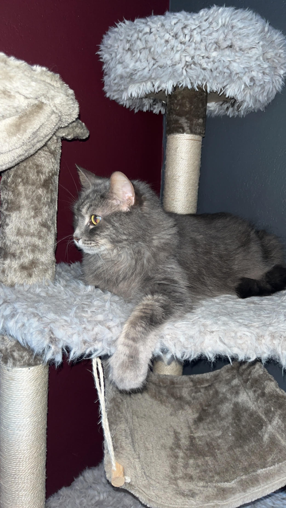

Our Pets
Introducing Nova(Left) and Arlo(right) and Gracie! Gracie is our cat, and she is 16 years old. She sticks to herself most of the time except for when her bowl is needing to be filled with food. Growing up, my family always had rescue dogs so when I had my own family I knew that I wanted to rescue dogs as well. We rescued both of our dogs from the Clark County Humane Society. We got Nova in April 2023 as a little puppy, and she has grown to be little bigger than expected. But that's okay, we love our big girl. We then got Arlo earlier this year in March 2024 as a puppy as well. Opposite to Nova, Arlo has remained relatively the same size as the day we got him. You can find them most of the time cuddled together on the couch or chasing each-other none stop around the backyard.
 

 
